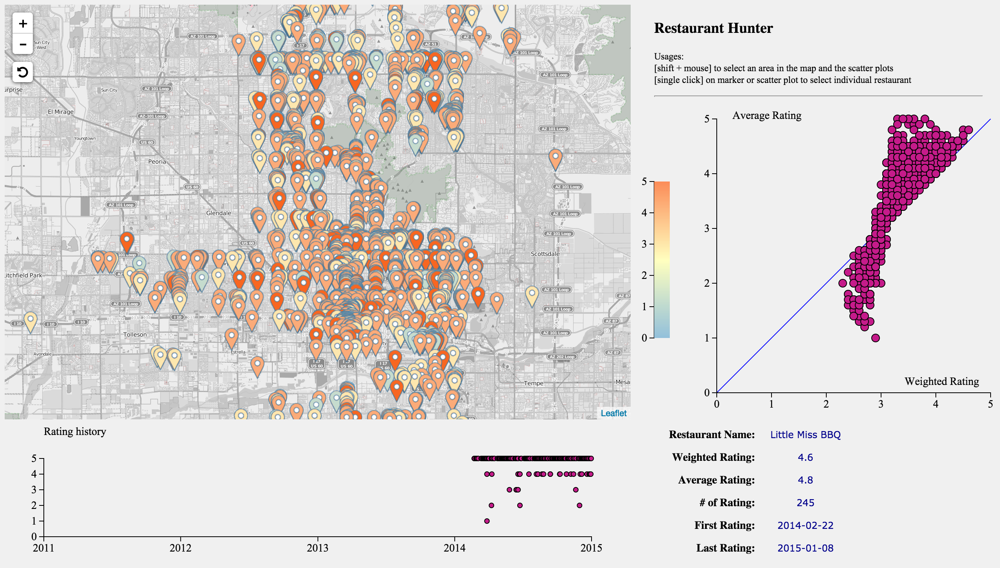
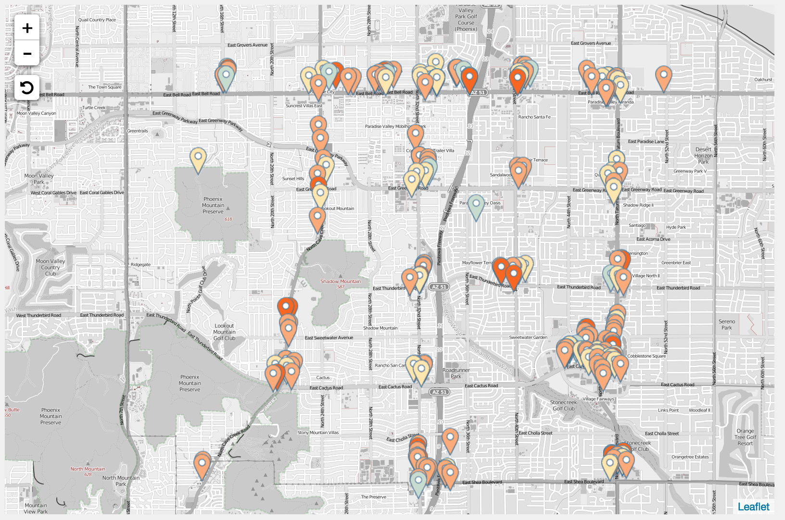
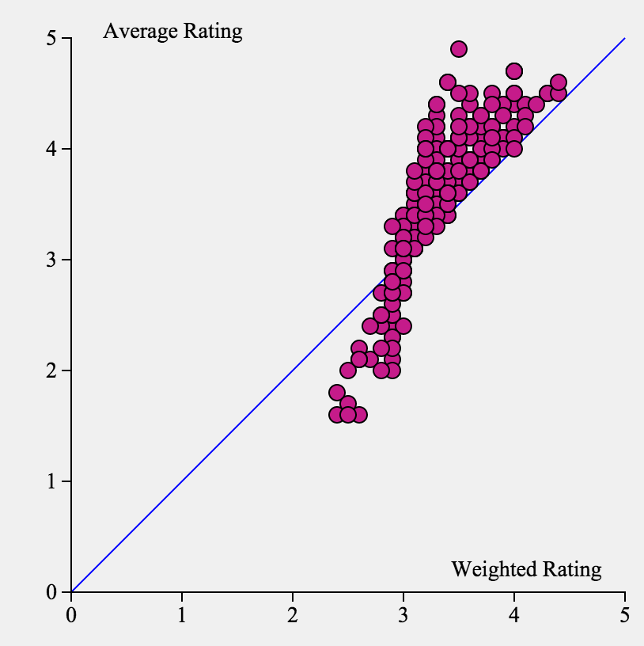
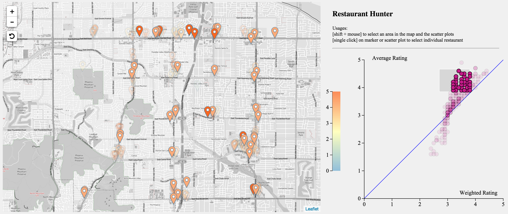
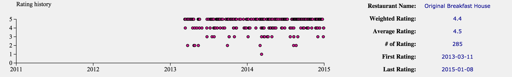

Introduction
Restaurant Hunter is a data visualization tool for Yelp Dataset Challenge. This tool helps users to easily find best restaurants in an area.
Video [Stay tuned!]
Screen Shot
Features
Color scaled markers on the map. 
A scatter plot of average stars vs weighted stars of selected area. 
Linked view between scatter plot and map. 
The whole history of reviews. 
Developers
Laiyong Mu